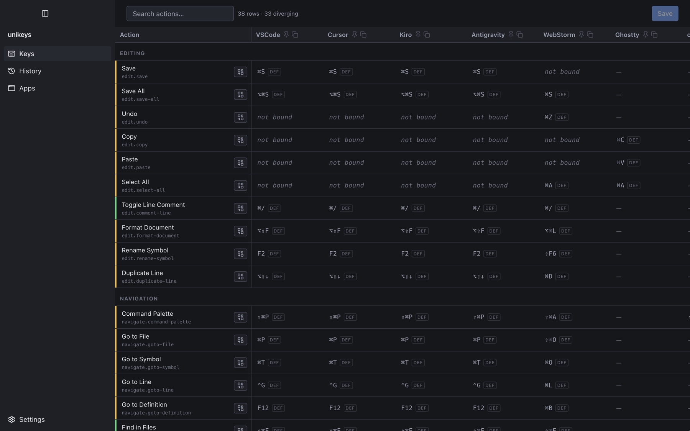
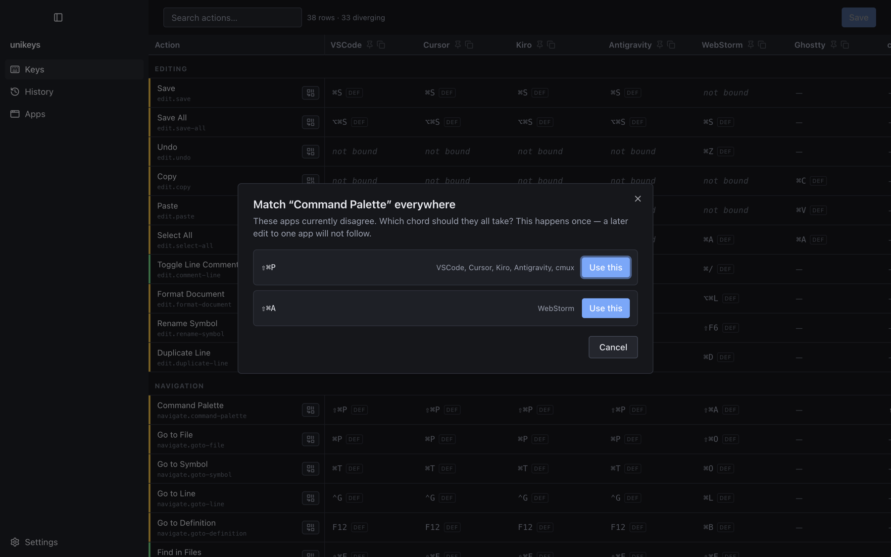
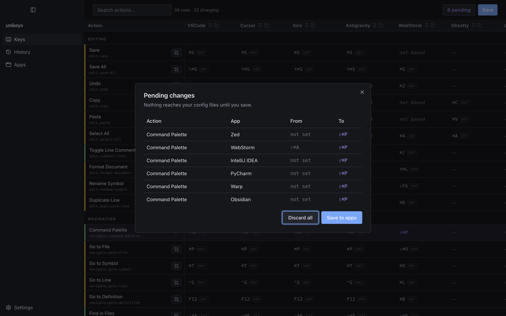
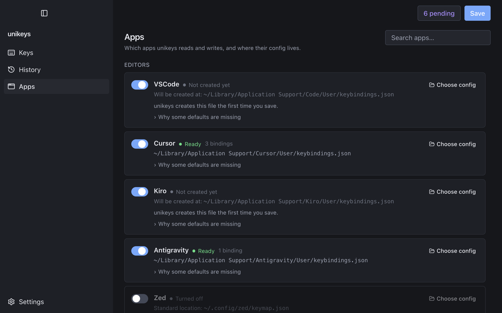
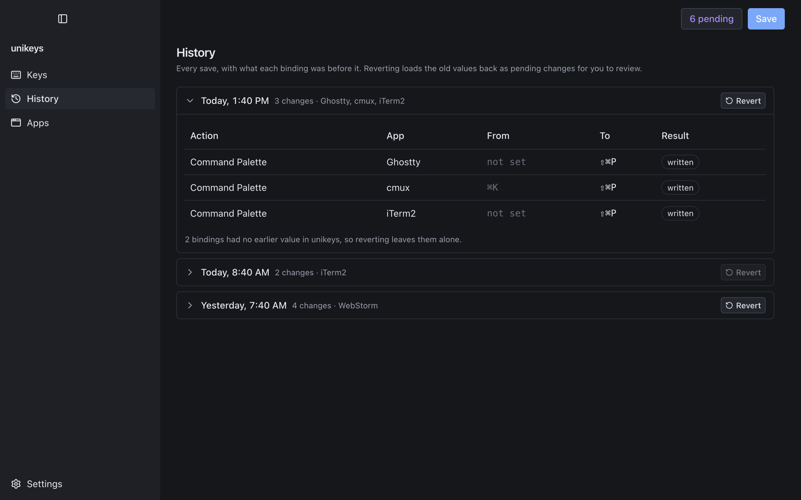

Thirteen apps · one table
Every shortcut,
side by side.
Your editor, your other editor, your terminal and your notes all disagree about ⇧⌘P. unikeys reads the real keybinding files on your Mac, lays every action out as a row and every app as a column, and settles a whole row with one press.
Universal DMG · 266 MB · signed and notarized
v1.0.0 — all releases
| Action | VSCode | Cursor | Antigravity | WebStorm | Ghostty |
|---|
The table
One row per action.
One column per app.
Each row is an action. Each column is an app. Each cell is the chord that action is bound to there. Thirty-eight actions across editing, navigation, terminal and window management, with the ones your apps disagree about marked as you scroll.

Match
Match a row
in one press.
unikeys shows you which chords are already in play and who uses each one. Pick the one you want and every app that supports the action takes it. This happens once — a later edit to a single cell changes that cell alone.

Nothing lands by surprise
Read every change
before it saves.
Edits stack up as pending changes — action, app, the chord it was on, the chord it is going to. Read the list, save it, or discard the lot. Nothing reaches a config file until you say so.

It knows where they live
You choose
which apps.
unikeys finds each app's real config file, shows you the path, and tells you what it found there. Turn an app off and it is left alone entirely. Keep your config somewhere unusual? Point unikeys at it.

Backed up, then written
Every save
is reversible.
Each save is kept with what every binding was before it. Reverting loads the old values back as pending changes, so you get to read the undo before it happens too. Every file is backed up before its first write in a session.

Supported
Thirteen apps, and where they keep their keys.
Editors
- VSCode keybindings.json
- Cursor keybindings.json
- Kiro keybindings.json
- Antigravity keybindings.json
- Zed keymap.json
JetBrains
- WebStorm keymaps/*.xml
- IntelliJ IDEA keymaps/*.xml
- PyCharm keymaps/*.xml
Terminals
- Ghostty config
- cmux config
- iTerm2 plist
- Warp keybindings.yaml
Notes
- Obsidian hotkeys.json
macOS
Get unikeys.
A signed, notarized universal build — Apple Silicon and Intel — that opens without a Gatekeeper warning. Not on the Mac App Store: a sandboxed app cannot read the config files unikeys exists to edit.
DMG · 266 MB · macOS
- Surgical writes Only the actions unikeys manages are touched. Comments, ordering and formatting in your files survive untouched.
- Backed up first Every file is copied before its first write in a session.
- Reversible History keeps what each binding was, and reverting comes back as pending changes to review.
Honest about version 1.0: most of the format adapters were built from each app's documented config format rather than tested against a live install — iTerm2 and Antigravity are the exceptions so far. Read the pending list before your first save. The README says exactly which is which.